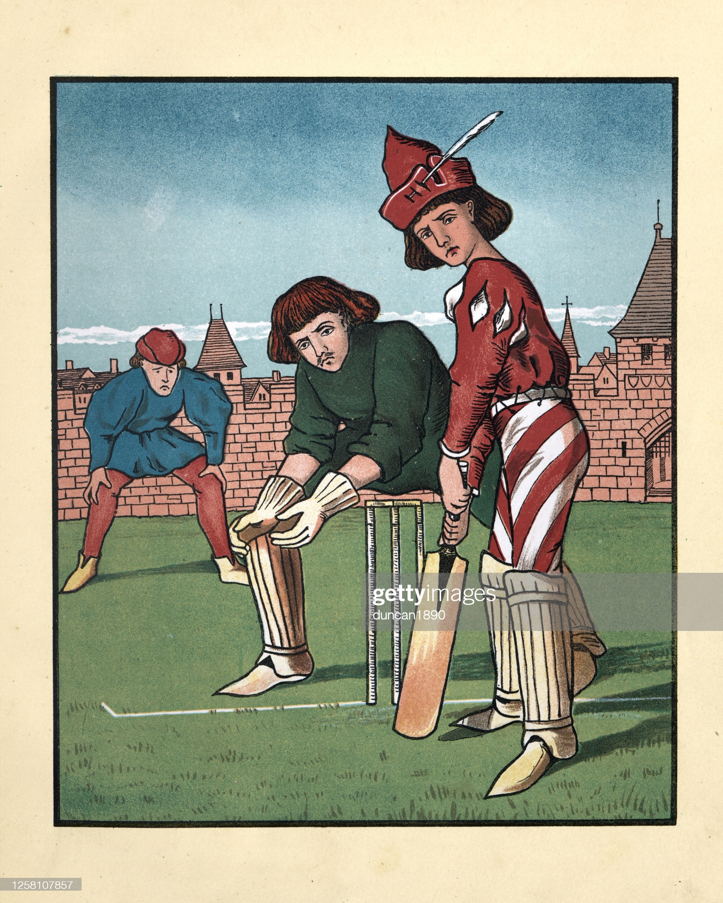

What is Cricket?
Cricket is a team sport which can trace its roots back to 17th century England. It is played on an oval shaped field with a bat and ball between two teams of 11 players each. The cricket field is oval with a rectangular "pitch" in the middle. The teams takes turn batting where the batters try to score the most runs while the opposite team tries to get them out.
From its humble begginings as a children's game played on sheep-grazed land in South East England, cricket underwent many transformations to ultimately spread globally along with the expansion of the British Empire. Today it has a presence in over 100 countries and it is statistically the second most followed sport only behind football although its popularity is concentrated in only a handful of coutries. The twelve major cricket playing countries are Australia, England, South Africa, West Indies*, New Zealand, India, Pakistan, Sri Lanka, Zimbabwe, Bangladesh, Ireland, and Afghanistan.
There are three distinct forms of cricket played internationally: Test cricket, ODI, and T20 with the latter being the newest and shortest form of the game. Test cricket today is played over 5 days where each team can bat upto two times. It is considered the most prestigious form of the game and is named so because it tests players skill, endurance, resilience and character. ODI (one day international) as its name suggests is played in a single day and lasts around 9 hours. While still pretty long, it first appeared in 1971 and was marketed towards TV audiences. Lastly, T20 is an even condensed form made in the 21st century to compete with other sports and attract younger population around the world.
Women have been an integral part of cricket since its formative years. The first recorded match of women's cricket was played in 1745. In fact, over-arm bowling - an integral part of cricket - would not be possible without the pioneering efforts of a woman. Unfortunately, due to various socio-economic hardships faced by women, especially in the developing countries, cricket was not seen as a viable career choice for a long time. While womens's cricket has grown at a steady pace over the last few decades, it has reached another level since the emergence of T20s and franchise cricket. Today, as cricket looks to expand commercially across the globe, once again it is women's cricket leading the way by being a part of the upcoming 2022 Commonwealth Games.
*West Indies is an international cricket team consisting of players from 15 nations in the Carribean.